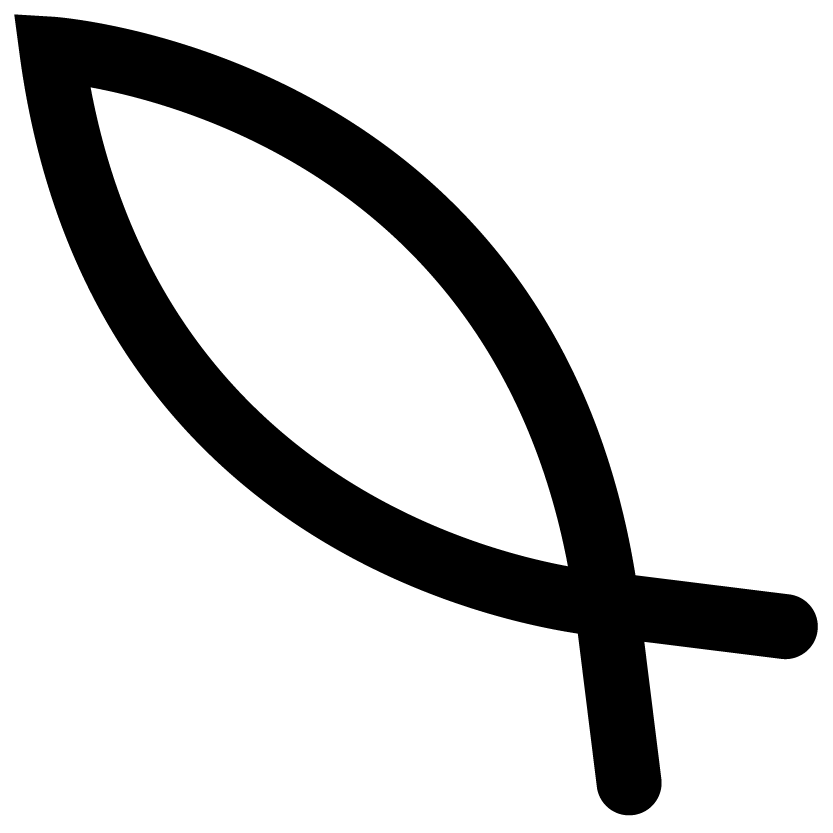

About
Kit
Receipe

_떡국
부럼&오곡밥
송편
팥죽
재료
떡 250g
물 1L
계란 1개
파 약간
김가루
육수용 다시마 1개
표고버섯 한 줌
멸치
대파
국간장
소금
만드는 법
ㄱ. 떡을 물에 한 번 씻어 건져둔다
ㄴ. 마른 팬에 멸치를 볶아 멸치의 비린내를 없앤다.
ㄷ. 볶은 멸치와 다시마, 대파를 냄비에 넣고 물 1L와 함께 15분간 끓여 육수를 낸다.
ㄹ. 육수용 재료들을 건져내고, 떡을 넣어 끓인다.
ㅁ. 국간장 두 큰술, 소금 반큰술을 넣어 간을 맞춘다.
ㅂ. 파를 썰어 넣고 떡이 적당히 익을 때까지 끓인다.
ㅅ. 떡국이 끓는 동안 계란 지단을 준비한다.
ㅇ. 계란의 노른자와 흰자를 분리한 뒤 각각 풀어준다.
ㅈ. 흰자와 노른자를 얇게 부친 뒤, 식힌 후에 알맞은 모양으로 썰어둔다.
ㅊ. 완성된 떡국을 접시에 담고 김 고명과 계란지단을 보기 좋게 올린다.
Jiwon Sung_
Seoul Natl’ Univ.
Department of Design
(Industrial Design)
Jimyung Woo_
Seoul Natl’ Univ.
Department of Design
(Visual Communication Design)